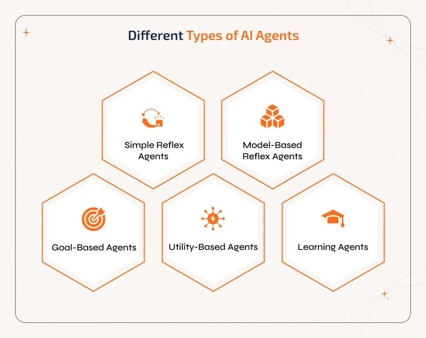
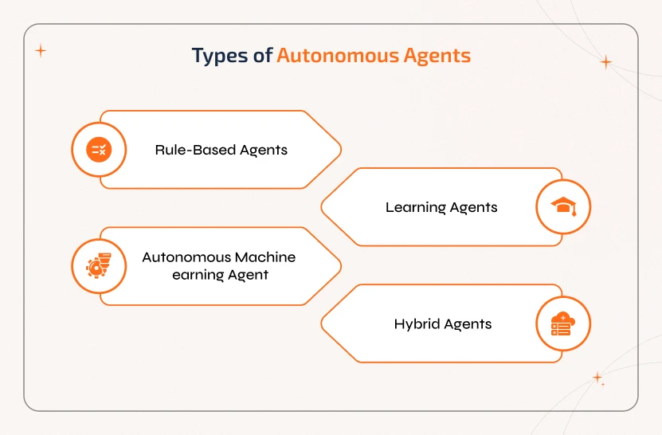
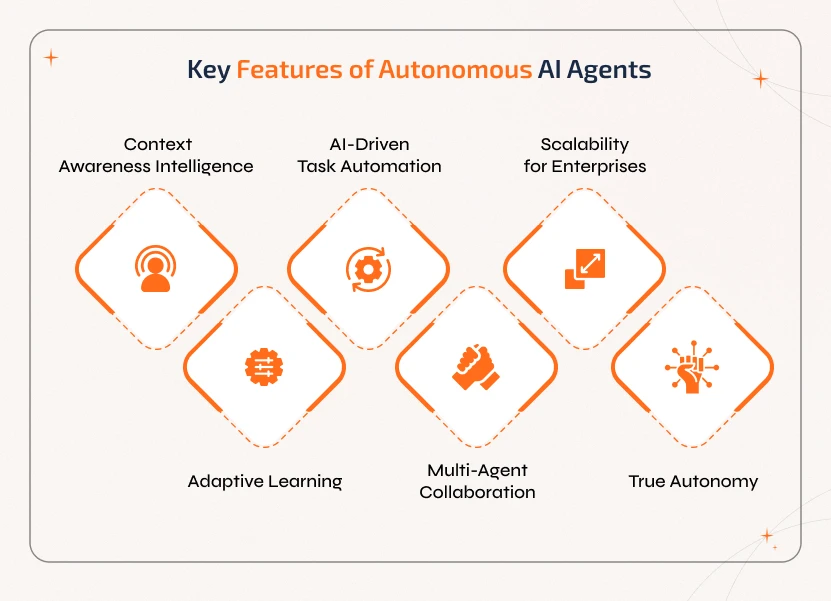
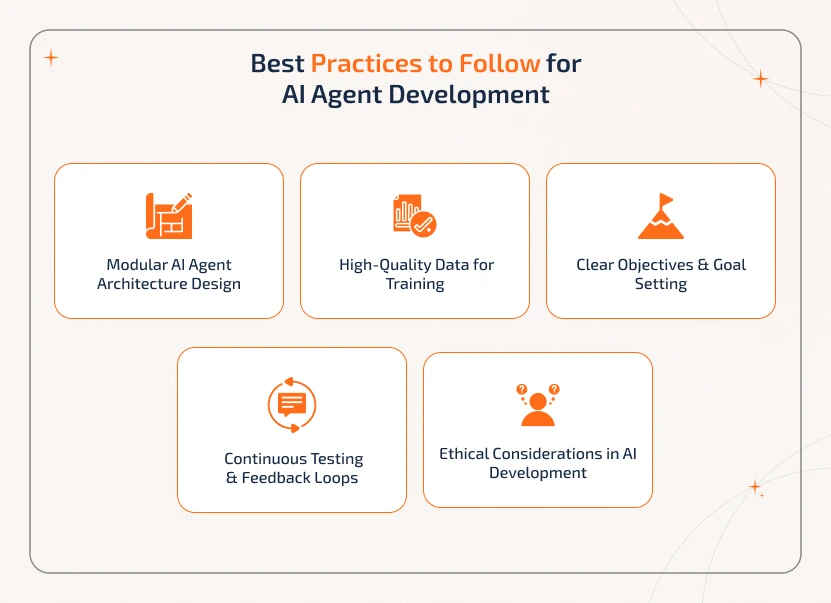

Imagine how easy it would be if software could think ahead, make informed decisions, and carry out tasks without human intervention? It is already happening in 2025, and autonomous AI agents are shifting from experimental projects into real-world operations. Today, businesses across industries are looking for ways to build autonomous AI agents that can handle repetitive & complex tasks, optimize workflows, and work independently within digital environments.
As per the prediction of OpenAI, it is expected that millions of autonomous AI agents will work in the cloud, supervised but largely self-operated. The company also stated that these agents will handle tasks like large-scale code refactoring, data integration, and real-time monitoring, reported Business Insider. This shift indicates that we are entering a new era where building autonomous AI agents is a key strategy for businesses looking to improve scalability, operational efficiency, and agility.
Here in this guide, we will explore what autonomous AI agents are, how they are built, and what makes them work, along with benefits & challenges, which are all explained, and you can learn to navigate or lead in this evolving space.
What are AI Agents - A Closer Look
An AI agent is a software entity that is designed to perceive its environment, make decisions, and handle actions to achieve a specific goal. They are capable of adapting to dynamic conditions using machine learning and data-driven insights. Hence they are unlike basic automation tools. Some of the common examples of AI agents include chatbots, recommendation engines, and multi-agent systems, where multiple agents work together to achieve a common goal.
With large language models , modern AI agents are capable of understanding natural language, processing unstructured data, and operating autonomously in real-world applications.
AI agents are classified based on their intelligence, autonomy, and adaptability, and the major classifications are as follows:

1. Simple Reflex Agents - With predefined rules, they respond to environmental conditions. It works faster but is limited in handling complex situations.
2. Model-Based Reflex Agents - It maintains an internal model of the world and thus makes informed decisions in changing environments.
3. Goal-Based Agents - They operate with specific objectives by choosing actions that move them closer to achieving their goals.
4. Utility-Based Agents - These agents evaluate possible actions based on their usefulness and ensure the best long-term outcomes.
5. Learning Agents - It improves performance continuously by learning from experience and feedback using machine learning.
What are Autonomous Agents?
Autonomous AI agents are capable of working independently and making decisions without continuous human oversight. While general AI agents rely on external inputs or predefined instructions, autonomous AI agents are unlike the former and thus are seen as the advanced version of general agents.
- Understanding the environment
- Setting up goals dynamically &
- Executing actions without direct commands.
In other words, these are AI-powered autonomous assistants that are designed to handle complex and dynamic situations in industries like finance, healthcare, or customer service. Autonomous AI systems form the backbone of adaptive enterprise automation and thus allow businesses to scale without scaling human effort.
Learn more by exploring the different types of AI agents.
Types of Autonomous Agents
Autonomous AI agents can be classified into different types based on their design, intelligence, and learning capability.

1. Rule-Based Agents - These are agents that follow predefined rules (if-then statements) and respond to specific conditions. While they are capable of handling repetitive tasks, they aren't capable of adapting to dynamic environments.
2. Learning Agents - They are designed in such a way that they adapt and improve over time. Learning agents modify their behavior based on feedback and experience. Thus, they are suitable for handling evolving scenarios.
3. Autonomous Machine Learning Agents - These agents use reinforcement learning and optimize their actions and decisions continuously. Thus, they achieve higher efficiency in complex tasks.
4. Hybrid Agents - By combining symbolic reasoning or rule-based logic with learning-based approaches, these agents provide both structure and adaptability.
With these feature differences, organizations can select the most suitable autonomous agents based on task complexity, scalability needs, and adaptability. This ensures businesses have more efficient AI-driven solutions.
Difference Between Autonomous Agents & AI Agents
The terms AI agents and autonomous agents are often used interchangeably. However, they represent different levels of intelligence and independence in artificial intelligence systems.
| Feature | AI Agents | Autonomous Agents |
|---|---|---|
| Control | Often needs human input or supervision to function effectively | Operate independently with minimal to no human intervention |
| Decision-Making | Follow pre-trained rules or logic | Adapt dynamically to their environment in real time |
| Complexity | Suitable for structured or rule-based tasks | Handle evolving, multi-step, and unpredictable tasks |
| Architecture | Simple rule-based or machine-learning-based | Built on an advanced AI agent architecture for self-governance |
In other words, all the autonomous agents are AI agents. But not all the AI agents are autonomous. The difference lies in the level of autonomy, adaptability, and decision-making.
Top AI Agents Frameworks for Building Autonomous Systems
It is vital to have powerful frameworks to start building autonomous AI agents. Choosing the right frameworks simplifies the design process, integration time, and orchestration. These AI agent frameworks offer the tools required to connect LLMs or large language models in autonomous agents with real-world applications, APIs, and data systems. This allows the developers to go beyond handling single-task automation and thereby create adaptive, goal-oriented agents.
The most popular AI Agent Framework includes:
1.
LangChain
It is the most widely used framework to build AI
agents. It uses
LLMs to connect with APIs, databases, and custom workflows. Thus, building AI agents
with LangChain
makes it ideal for developing applications like chatbots, automation systems, and
research tools.
2. LangGraph
It offers a structured way to
design multi-step reasoning processes and agent orchestration. LangGraph thus helps
developers manage complex AI-driven workflows effortlessly.
3. AutoGPT
This is an open-source project that lets the agents split large
goals into small, actionable tasks and execute them autonomously without continuous
human input.
4. BabyAGI
It is a lightweight framework
that focuses on task management and execution. BabyAGI is inspired by autonomous
general intelligence research.
5.
CrewAI
It is a modern framework that is designed to work for
multi-agent collaboration. This enables different AI agents to coordinate and solve
complex problems together.
6.
SuperAGI
This is an advanced development platform that offers
support for building, deploying, and scaling autonomous agents with tools for
customization and experimentation.
7. MetaGPT
It is a multi-agent framework
in
which agents collaborate like a virtual software company and handle roles such as
project manager, developer, tester, etc.
These frameworks are revolutionizing AI agent development and making it easier for businesses and developers to craft smart systems that can adapt, collaborate, and operate independently. Above all, these frameworks go beyond single-task automation using AI agents and build adaptive, goal-oriented systems.
Best Tools and Libraries to Build Autonomous AI Agents
In order to develop autonomous AI agents, it is vital to use a variety of tools for development, integration, and automation. By using the right set of tools, developers will be able to build AI systems that are intelligent, adaptive, scalable, and work for real-world needs.
1. APIs & SDKs
They allow the AI agents to interact with external systems,
databases, and applications. Also, they offer connectivity support to handle tasks
like data retrieval, notifications, and workflow integration.
2. Open-Source Libraries
Some of the most popular libraries, like Hugging
Face Transformers, PyTorch, and TensorFlow, allow developers to implement machine
learning models, natural language processing, and deep learning capabilities within
autonomous agents.
3. Automated AI Workflows
Platforms that optimize the task automation
pipelines allow agents to execute multi-step processes with efficiency while
reducing manual intervention and improving consistency.
4. Custom Autonomous AI Solutions
With customized implementations designed
for specific industries or business needs, it is possible for enterprises to deploy
an AI agent that can solve unique challenges and optimize operations.
Choosing the right tools depends on factors like scalability, the type of use cases, and whether the system requires standalone agents or a network of collaborating multi-agent systems. Using the right stacks and tools ensures that the AI agents you develop are flexible, efficient, and ready for real-world deployment.
Key Features of Autonomous AI Agents
An AI agent is truly autonomous only upon possessing several essential features that let it operate independently, adapt to changing conditions, and collaborate to work effectively in complex environments. These capabilities make AI agents efficient across industries. The key features to look at an autonomous AI agent are as follows:

1. Context Awareness Intelligence
Autonomous AI agents can perceive and understand their environment in real-time.
This allows them to respond accurately during dynamic or ever-evolving conditions.
2. Adaptive Learning
With machine learning and feedback mechanisms, autonomous AI agents will
continuously evolve their behavior, improve decision-making, and performance over
time.
3. AI-Driven Task Automation
Autonomous agents are capable of executing repetitive or complex tasks
independently. This way, they reduce manual effort and streamline workflows across
different business processes.
4. Multi-Agent Collaboration
Through multi-agent collaboration, autonomous agents can work alongside other
agents. They can coordinate actions and share knowledge to solve larger and more
complex problems in an efficient way.
5. Scalability for Enterprises
These are agents that are designed to handle enterprise-level workloads. They can
even manage multiple tasks, users, or systems at the same time without downgrading
performance.
6. True Autonomy
The most important feature of autonomous AI agents is that they are able to operate
with minimal human input. i.e., they can make decisions and take actions
independently to achieve defined goals.
No matter if it is customer service, process automation, data analysis, or anything in between, with all of these features, autonomous AI agents can deliver smarter, faster, and more reliable solutions.
Learn how features like task automation, adaptive learning or multi-agent collaboration can drive smarter business solutions.
Business Benefits of Autonomous AI Agents for Businesses
Businesses integrating autonomous AI agents into their operations are able to unlock significant advantages such as efficiency, scalability, and cost optimization. With AI-driven task automation with adaptability, these agents can help businesses to stay competitive in a rapidly evolving digital environment. The common benefits include:
1. Higher Efficiency with Autonomous AI Agents
Autonomous agents will execute tasks much faster and with fewer resources. Thus,
they help free up human agents and help them focus on strategy and innovation
instead of handling repetitive tasks.
2. Reduced Errors through AI-Driven Automation
With very minimal human
intervention, AI-driven autonomous agents will deliver more accurate and consistent
results. This, in turn, reduces costly manual mistakes.
3. Scalability for Enterprise AI Systems
AI agents will be able to scale
across departments or entire enterprises seamlessly. Thus, they can handle increased
workload without requiring additional staffing.
4.Intelligent Process Automation using AI Agents
With AI-powered process
automation, business workflows become more adaptive, dynamic, and capable of
responding to real-time conditions..
5. Cost Optimization with AI-Powered Workflows
By optimizing business
operations and automating resource-heavy tasks, autonomous AI agents will lower the
operational costs while maximizing productivity.
6. Continuous Improvement via Machine Learning
By
using machine learning and feedback loops, these agents will enhance their
performance over time while ensuring continuous optimization and smarter
decision-making.
Best Practices to Follow for AI Agent Development
Designing autonomous AI agents requires more than just using advanced algorithms. i.e., it requires a structured approach that ensures stability, scalability, and ethical responsibility. Upon following the best practices in AI agent development, organizations can build systems that are not just intelligent but also reliable and trustworthy.

1. Modular AI Agent Architecture Design
By using modular architecture, it
is easier for AI agents to update, scale, and extend. Developers can even add new
features or adapt to business needs without disrupting the entire system.
2. High-Quality Data for Training
The foundation of effective learning
involves clean, relevant, and well-structured data. High-quality datasets enable AI
agents to make accurate decisions and reduce errors.
3. Clear Objectives & Goal Setting
Defining clear objectives allows the
agent's actions to align with your business goals. This prevents companies from
wasting resources on repetitive work while helping enhance the system's efficiency
overall.
4. Continuous Testing & Feedback Loops
By regularly testing and
monitoring, it is possible to detect performance issues at an early stage. Feedback
loops keep the agents adapting and refining their behavior for better results.
5. Ethical Considerations in AI Development
Responsible AI development involves addressing bias,
accountability, and fairness. By embedding ethical guidelines, businesses can ensure
compliance and build user trust.
By adhering to these best practices, businesses can create autonomous AI agents that are efficient, scalable, and ethically sound, offering long-term success.
How Autonomous AI Agents Work: Conceptual Process of Building Autonomous AI Agents
The process of building intelligent AI agent with involves more than coding. It begins with understanding the logic and structure that make the system intelligent and adaptive. This conceptual workflow is designed as an educational guide and thus helps developers & learners to learn how autonomous agents can think, reason, and act.
Step 1: Input & Perception
The very first steps involve finding the type of data the agent will interact with.
i.e., it may be text, images, sensor reading, user input, etc. The chance for the AI
agent to perceive its environment will be most accurate when the inputs are defined
properly.
Step 2: Reasoning & Decision-Making
By using AI models like large language models or machine learning, the agent will
interpret the input data and find the best possible actions. This step forms the
cognitive brain of the agent.
Step 3: Task Execution
In this step, the agent will conceptually plan how to carry out its actions. i.e.,
whether to respond to a user query, optimize a process, or control a physical
system. This step links reasoning to real-world or digital execution.
Step 4: Learning & Feedback
Autonomous agents will improve over time by analyzing outcomes and adjusting their
behavior. By integrating feedback loops, continuous learning, and thus the system
becomes smarter and more effective with each iteration.
Upon following this workflow, autonomous AI agents will be able to maintain adaptability, intelligence, and reliability. All these make them handle complex, multi-step tasks in dynamic environments. It also works as a practical guide for AI agent development, helping teams to design strong, scalable, and effective autonomous systems.
Industry-Specific Use Cases: Real-World Applications of Autonomous AI Agents
Autonomous AI agents are transforming industries with practical and measurable impacts. Check out the table for a clear understanding.
| Industry Specific Use Case | Real-World Application of Autonomous AI Agents | Benefits They Offer |
|---|---|---|
| Customer Support | Conversational AI-driven chatbots & virtual agents. | They offer 24/7 support, quick query resolution & minimal operational costs. |
| Healthcare | Diagnostic assistants and patient monitoring systems. | They detect diseases early, track vitals, and improve treatment accuracy. |
| Finance | Risk analysis, real-time fraud detection, and portfolio management. | They enhance decision-making and safeguard operations. |
| Supply Chain | Autonomous optimization of logistics, inventory management, and demand forecasting | Provides faster delivery and reduced costs. |
| Business Automation | Streamlined workflows, reporting, and data processing with minimal human intervention | Offers improved operational efficiency. |
Future of Building Autonomous AI Agents
The future of autonomous AI agents is all set to redefine the industries and business sectors in terms of how they operate. They are making systems more intelligent, collaborative, and adaptive. It is essential for both organizations and learners to understand the emerging trends to expect from the next generation of AI capabilities.
- Autonomous AI agents will increasingly be integrated into enterprise workflows directly. Thus, they will automate complex business processes, improve efficiency, and support decision-making at scale.
- We can expect a higher adoption rate of multi-agent systems in AI where multiple agents will collaborate to solve complex problems, manage tasks, and optimize results.
- Future agents will use continuous learning and autonomous machine learning to improve performance, adapt to new environments, and make better predictions without human intervention.
- As autonomous AI agents take up more critical roles, we could find a strong focus on responsible and explainable AI. This ensures trust, transparency, and accountability in autonomous decision-making processes.
By understanding these trends, developers, learners, and businesses can stay ahead of the curve and build next-generation AI agents that are not just effective but trustworthy.
Explore our blog to learn how intelligent, adaptive & collaborative AI agents are shaping the future of industries.
Conclusion
Autonomous AI agents showcase the power of intelligent systems and how they make business operations independent, adapt to new situations, and automate complex tasks. By getting to know about their types, features, frameworks, and workflow, it is easy for anyone to understand how these agents function and transform industries.
By understanding autonomous AI agents, it is possible to:
- Design adaptive AI agent systems and scalable AI systems.
- Implement AI-driven automation for real-world workflows.
- Work for the future of AI agent development, such as multi-agent collaboration and continuous learning.